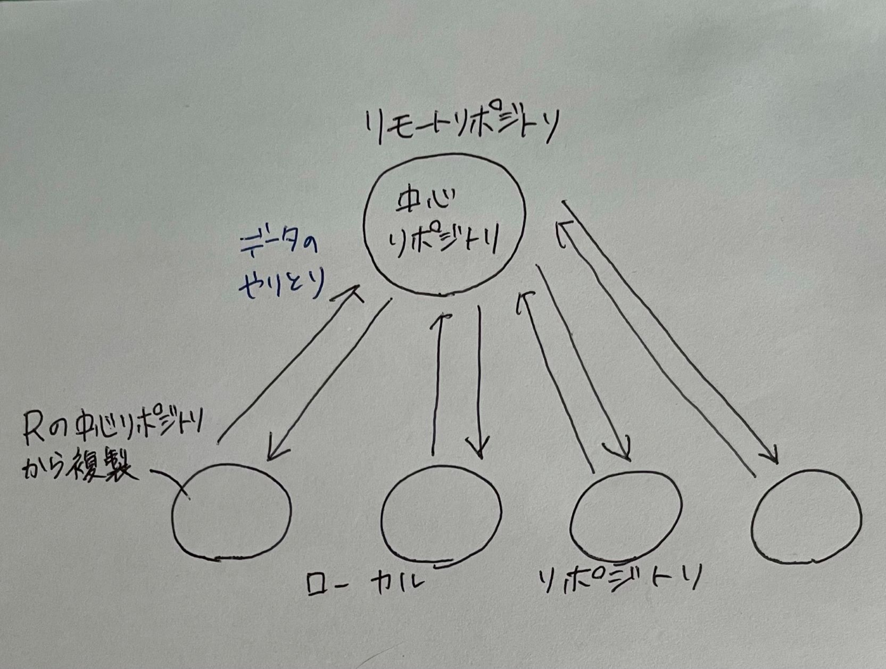
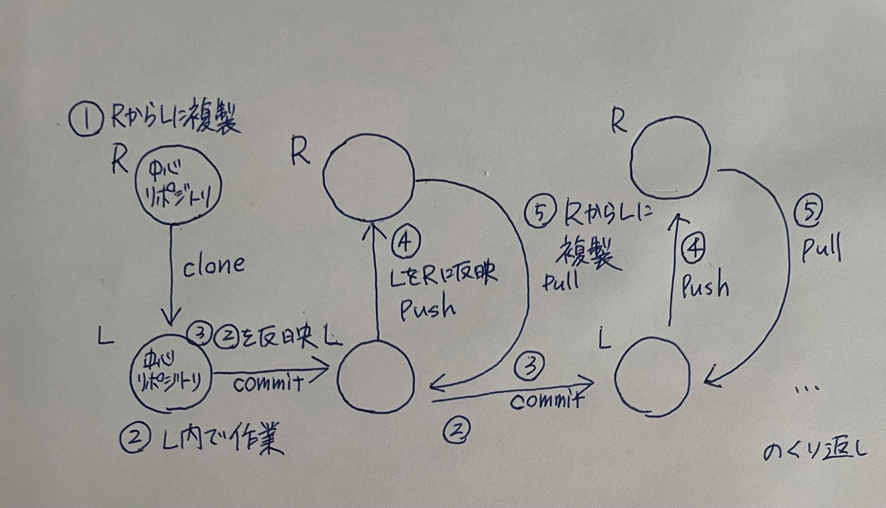

１．Gitに関して
Gitとは、分散型バージョン管理システムの一つである。
Gitを利用することにより各ユーザー毎に全履歴を含むリポジトリを複製しておくことができる。
つまり各ファイルの状態を更新履歴として残しておけるということである。
これによりコピー等を残さずとも該当ファイルの状態を過去に戻したりすることなどが可能になる。
リポジトリについて
リポジトリとはファイルやディレクトリの状態を記録している場所である。
リポジトリの管理下に置くことで変更履歴を保存することができる。
リポジトリにはリモートリポジトリとローカルリポジトリの二つが存在する。
リモートリポジトリは主に他者との共有の為のリポジトリである為、自身の作業内容をUPしたり、他者の作業内容を取得することに使われる。
各ユーザーはローカルリポジトリにて主に作業をすることとなる。

作業の流れ
文章の便宜上リモートリポジトリをR、ローカルリポジトリをLと表記する。
- Rから中心リポジトリ*1をLに複製(clone)
- Lにて内容の変更等の編集作業を行う
- Lに作業履歴を記録(commit)
- Lでの作業履歴をRの中心リポジトリに反映(push)
【ここで他者の作業内容と衝突する事がある。その場合マージ(merge)という作業が必要とされることがある。*2】
- Rにて更新された中心リポジトリをLの複製(１．で複製された中心リポジトリ)にて反映(pull)
- Lにて内容の編集作業(=2.に戻る)

*1中心リポジトリ…チーム内の作業内容の履歴を1箇所に集めているリポジトリのこと
*2自身がpullし、pushするまでの間に他者がpushした場合、自身のpushは拒否され、Rに反映することが出来なくなる。
その場合、他者がpushした作業履歴をRから自身のLに取得するmergeという作業が必要になる。
また、Rでの他者の変更内容と自身の変更内容が重なった場合、競合が起き、再び自身のpushが拒否される為、更に手動での修正が必要となる。
２．HTMLに関して
HTMLとはHyper Text Markup Languegeの略でハイパーテキストをマークアップ出来る、目印を付けられる言語という意味である。
ハイパーテキスト…ハイパーリンクを埋め込むことのできるテキストのこと。
ハイパーリンク…クリックすると別のページやウェブサイトに移動する、所謂リンクのこと。
ハイパーテキストでは、ハイパーリンクで関連する情報を結びつけ、情報を整理するという仕組みである。
マークアップ
文章の各部分がどのような役割(見出し、表、リスト等)なのかを示すマークアップ(目印をつける)をすることで、コンピュータが文章構造を理解できるようになる。
このマークアップに使われる記号がHTMLタグと呼ばれるものである。
HTMLタグ
HTMLタグとは前述した通り、マークアップに使われる記号である。
一般には
<○○>(開始タグ) 文章を入力 (終了タグ)
といった風に入力するが、HTML文書内では、開始タグ・終了タグの一部のものは省略されることもある。
この<○○>がHTMLタグに該当する。
○○の部分に入る要素(エレメント)、またそれらの効果は非常に多岐に渡る為、外部サイトを参照されたし。
外部サイト
HTML要素リファレンス-MDN Web Docs
デザイン経営Ⅰ・Ⅱトップページ
XBPトップページ